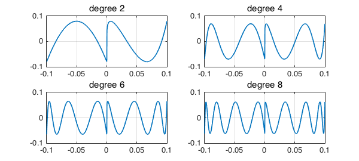
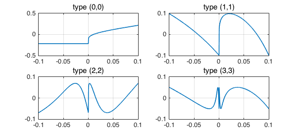

The function $|x|$ can be approximated with accuracy $O(1/n)$ by degree $n$ polynomials on $[-1,1]$ but accuracy $O(\exp-C\sqrt n)$ by type $(n,n)$ rationals. In a lecture at Oxford on 8 November, Alexander Pushnitski presented some striking theorems concerning much more difficult functions involving $1/\log x$. Roughly speaking polynomials can achieve accuracy $1/\log n$ whereas rationals are closer to $1/n$.
As a concrete example, consider the function that takes the value $0$ for $x\in [-.1,0]$ and $-1/\log x$ for $x\in [0,.1]$, we construct $f$ with splitting, we get this image:
f = chebfun('-heaviside(x)./log(x)',[-.1,.1],'splitting','on');
LW = 'linewidth'; MS = 'markersize';
plot(f,'k',LW,2), ylim([-.2 .5]), grid on
The function is so steep that Chebfun thinks it actually has a jump at $x=0$, hence the gap in the plot.
We know that the Chebyshev coefficients of a function with a jump discontinuity decrease at the rate $O(1/n)$. This function is almost a step discontinuity, and the Chebyshev coefficients decrease almost as slowly, at a rate (to be confirmed) $O(1/n\log n)$:
f1000 = chebfun('-heaviside(x)./log(x)',[-.1,.1],1000);
plotcoeffs(f1000,'loglog'), xlim([0 500]), grid on
Here are some polynomial approximations to $f$.
tic
f = chebfun({0,'-1./log(x)'},[-.1 0 .1],1000);
LW = 'linewidth'; MS = 'markersize';
for m = 1:4
p = remez(f,4*m);
subplot(2,2,m), plot(f-p), grid on
title(['degree ' int2str(2*m)])
end
toc
Elapsed time is 18.875295 seconds.

These converge very slowly, and that could easily be proved. For $p$ to approximate $f$ to accuracy $\epsilon$, its derivative would have to be of size at least $\exp(C/\epsilon)$. From Markov's inequality it will follow that $\epsilon$ can decrease no faster than approximately $O(1/\log n)$ as $n\to infty$ (to be confirmed).
Here are some rational approximations. The convergence is probably $O(1/n)$, but we are far from seeing that.
tic
for m = 1:4
[p,q] = remez(f,m-1,m-1);
subplot(2,2,m), plot(f-p./q), grid on
title(['type (' int2str(m-1) ',' int2str(m-1) ')'])
end
toc
Warning: Remez algorithm did not converge after 20 iterations to the tolerance 4.6e-14. Elapsed time is 25.523845 seconds.

What about CF (=AAK) approximation, which as it happens is the method used by Pushnitsky for his proofs? It gets in the ballpark:
tic
for m = 1:4
[p,q] = cf(f,m-1,m-1,4000);
subplot(2,2,m), plot(f-p./q), grid on
title(['type (' int2str(m-1) ',' int2str(m-1) ')'])
end
toc
Elapsed time is 4.508529 seconds.